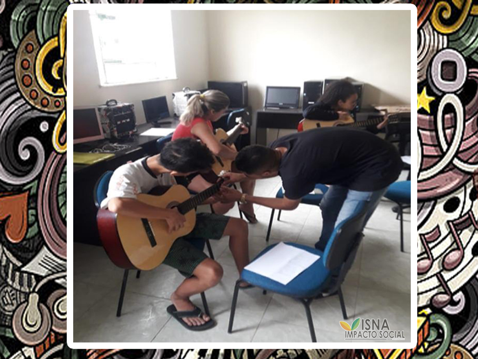
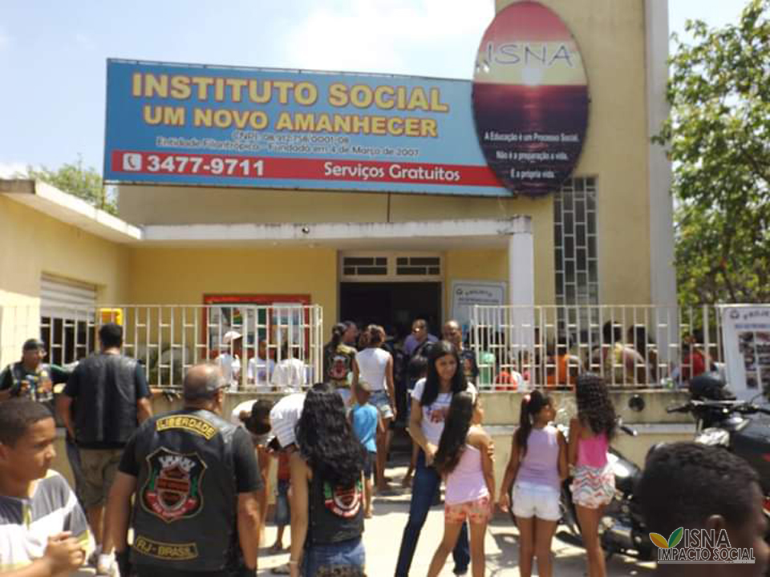

Conheça nossas práticas de transparência e prestação de contas.
O ISNA acredita que a transparência é fundamental para construir confiança e demonstrar nosso compromisso com a sociedade. Aqui você encontrará informações sobre nossos projetos, recursos e resultados.
Acesse nossos relatórios financeiros e prestações de contas anuais, demonstrando como utilizamos os recursos recebidos.
Conheça nossos documentos institucionais, incluindo estatuto, regimento interno e políticas organizacionais.
Veja os resultados alcançados por nossos projetos e o impacto social gerado em nossas comunidades.
Conheça alguns dos projetos que desenvolvemos ao longo de nossa história, demonstrando nosso compromisso com a transformação social e o desenvolvimento comunitário.
Projeto que promove a prática do Jiu-Jitsu como ferramenta de desenvolvimento pessoal e social.

Iniciativa que utiliza a música como instrumento de transformação social e desenvolvimento cultural.

Projeto que leva alegria e esperança através de ações solidárias durante o período natalino.